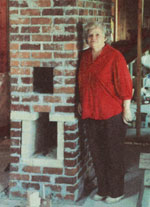
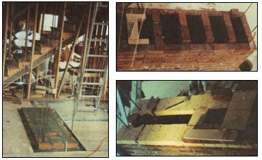
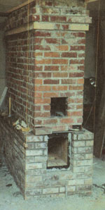
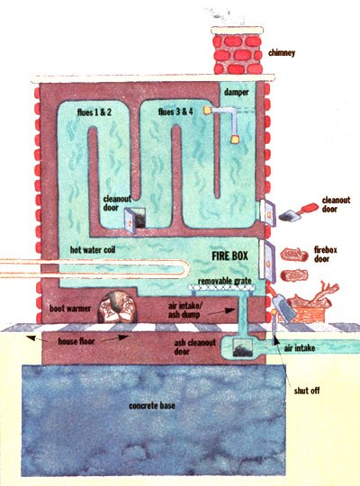
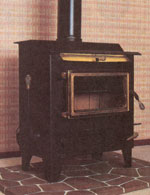
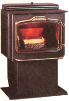

Woodstoves
Heating the Russian way.
Sometime before the dawn of history, it was discovered that bricks had the distinct ability to (temporarily store heat and give it off at a fairly uniform rate. Hence, when your great-grandmother went for a sleigh ride, she first heated a brick and took it along with her as a portable heater. As time went by, people built various kinds of stoves, furnaces, etc., out of brick and made use of this principle to even out the heat output of wood.
In Eastern Europe and parts of Scandinavia, the winters were severe and the problem became acute as the available wood supply became so depleted that at times they had to use straw, brush, or animal dung to keep warm. Taking the heat-storing ability of brick beyond the simple fireplace, they began to build masonry stoves that were enclosed (so that the air supply could be outdoor air rather than the already-heated indoor variety), and they designed the flue so that the hot gasses produced by the fire ran through a long maze of brick. This caused most of the heat to soak into the brick rather than to go up the chimney. As the heat soaks into the bricks, the gasses cool and contract, creating a vacuum which sucks air up from the intake and causes these stoves to have a tremendous draft, thus making them highly efficient burning systems which could be fueled very successfully with most anything burnable.
At a home show in Seattle, I saw one of these Russian (or Finnish) stoves. It looked like a good answer to my problem. One of the options shown with it was a condenser pipe that provided hot water output from the stove. This could be piped around the house to distribute the stove's heat. Excellent! Just one problem though: the price. Bricklayers no longer work cheap, and bricklayers with a specialty are even less cheap. (A brick company salesman told me he was run off from a construction site by the brick mason who was building a Russian stove but didn't want anyone to see how.) The minimum price I was quoted was $6,500 for the smallest one they made-no frills, no hot water, and not including travel expenses.
Although I am not a brick layer, I have built a few things out of brick. In my college years, I mixed and carried hod for brick layers, so I know the basics. It really takes four ingredients to get started: hard work, a good eye, lots and lots of patience. . . and a library. After some searching, I came upon a book in the public library which gave detailed plans and instructions for building Russian stoves. Even the author of this book intimated that if you were an amateur, you had to be a little bit loony to attempt building your own stove. He was wrong as it turned out, but I appreciated the advice anyway.
I began searching first for someone who would sell me a door and heating coil for the stove. I found out that iron stove manufacturers will not sell you only a door, because they must spend an inordinate amount of money getting state approval to market their products and they are afraid that if someone buys the door with their state number on it, he will then manufacture his own stove without having to spend the bucks to get his design approved. Finally, I found a guy who built Russian stoves who would sell the components. I came to suspect that he didn't believe anyone would really follow through and build his own stove and that by selling me the parts, he would get me "hooked" and eventually get a contract to build my stove. Anyway, after some time, he came up with the tempered glass door and water coil I wanted. He also imparted a little advice. He was familiar with the design we had gotten from the library. He said it worked, but it was too light in a few places. He recommended we put another complete layer of brick around the outside. This made the already large project much bigger. But, his rationale seemed justified, so we did it. Total bricks needed now: 1,900.
I needed just one more specialty item: the pipe to run through the floor. Copper tubing would have worked, but I was a little concerned that in time it might react with chemicals in the concrete and corrode. Once the stuff is in the concrete, you aren't going to be able to replace or repair it. At the same home show, I had seen a display by a Swedish manufacturer of a floor heating system using plastic pipe. It was a threelayer sandwich of very tough plastic. Theoretically, it should outlast the house. From the distributor, I got complete specs, list prices, etc. However, when I wanted to order, they informed me they were just the distributor and that I would have to buy from one of their dealers of which there were three in my area. When I contacted the dealers, they informed me they only sold to contractors, and unless I had a contractor's license, it was no sale. At this point, I got a little irate-an emotion that sometimes pays off. I called the distributor and verbally chastised him for selling me on a product I couldn't buy. He apologized and agreed to sell me what I wanted direct, at dealer cost! His hotshot dealers just did themselves out of some business.
One nasty thing about a wood stove is that you have to haul out the ashes. I am a spiller by nature, and hauling ashes over the living room carpet seemed like a sure source of complaints from my wife. Since the heat pipes were not going in the living room where the stove was to be, we made the living room floor on the low side out of wood. The stove went in this wood portion of the floor. We poured a big chunk of concrete as a base for the stove, then put the cleanout under the floor.
Now I simply remove the grate which sits over the air vent. Then I take a garden hoe and pull the ashes forward in the firebox, allowing them to drop down through the air vent into a space at the base of the stove. This way, by ducking my head a little, I can remove the ashes under the house and outside without messing up the inside of the house. This design also has the advantage of using the same rear opening as the outside air intake.
At some point my family began to realize I was serious about placing a huge (32" X 76" X 7 1/2' high) pile of bricks right in the middle of the house and that it would be the most prominent thing in our living-dining kitchen. My son Jeff is a perfectionist and quite concerned about how things are going to look. He really didn't think the old man would be patient and careful enough to make sure this object was a thing of beauty, not an eyesore. I showed him how to mix mortar and how to lay a brick. (I wound up mixing most of the mortar myself anyway.) He studied the book carefully, and although up to that time he had never laid a single brick or seen it done, he announced that he would build the stove.
The addition of a second layer gave us an opportunity to make a few mistakes that did not show. Using an old skill saw with a brick saw blade, I cut the bricks that had to be cut. I also mounted the door and cleanouts. We did the inside with soft garden brick (cheaper and easier to cut). The firebox and flue portions, which would get a lot of heat, we lined with firebrick. For the outside shell, we used a hard brick (expensive and much harder to cut). The stove stands in the middle of the room, seven and a half feet high with another seven feet of brick chimney on top. After we got through the ceiling, we saw no reason to go to all the work to build clear through the roof with brick, so we installed a metal chimney, which can hardly be seen outside anyway. I may be prejudiced, but I don't believe a professional would have done a better job.
To keep the house warm, we only have to burn it one to two hours in the morning. Then when there are still a lot of hot coals, we shut down both the damper and the air intake. This traps the hot air in the stove, and it stays hot for about 24 hours and warm for 48 hours. Maximum surface heat comes about 30 minutes after shutting down the stove, so short that very hot burns are the most efficient. When you have reached the maximum heat, additional burning mostly puts heat up the chimney. In the very coldest winter weather, room temperature overnight drops by about three to four degrees. (In very cold weather we usually do an evening burn also.) You do have to be careful not to let the fire go out without shutting it down. If you forget, the cold air continues to circulate through the stove, and you lose much of your heat.
The firebox is 40 inches long, making the ideal firewood length about 36 inches. However, if you accidentally get one a little longer, there is about a foot of space at the bottom of the first flue where you can shove the end, so you can actually accommodate a four foot piece of wood. It is ideal for burning the long, skinny alders I am removing to make room for the conifers. Also, in some areas of the property, too many conifers are squeezed in together for good growth. Thinnings from those areas fit the stove very well. Then, of course, there are lots of deadfalls. The smaller the diameter of the wood, the faster (and therefore more efficiently) it burns.
Once you have a hot fire going, there is no visible smoke coming out the chimney. By the time the flue gasses have traveled about 35 feet from the firebox to the ceiling, they are barely warm. The heat all soaks into the bricks. A chimney fire is impossible. I open the two cleanout doors at the bottoms of the flues about once a month and take out the little bit of fly-ash which accumulates there. There is no buildup of creosote, although I do find a little on the inside of the doors occasionally. I believe this forms as the fire is just starting and before it has gotten up to speed.
Besides the physical warmth the stove gives, seeing the blaze through the door, "warms the cockles of the heart" On winter evenings, we sometimes start a short fire just to get that glow. It helps to make a house a home. Sometimes I am kept awake at night by a sore back. When this happens, I sit with my back to that hot brick and soak up the heat. Keeps me from reaching for the aspirin.
A friend gave us some two-inch maple that had been only rough sawed. We cut it and sanded it down to make mantels for each side of the stove. "J" bolts (secured in the inside brick as we were building) provide a solid anchor for the maple brackets that hold these mantels.
The in-floor heat distribution has not worked as well as expected. This is primarily due to the fact that we don't burn the stove often enough to keep the concrete heated up, and the extra concrete and steel they made us put in has expanded the size of the block we have to heat. However, we manage to keep quite warm and comfortable. It is fortunate that we built when we did, because under today's building rules we would have to install a heat pump anyway whether we needed it or not-and we certainly don't.
You do have to learn to manage your heat. By the same token that it takes a long time to cool off, it also takes a long time to heat up. If you wait until the stove is cold (about 48 hours to completely cool) to start your fire, you are in for a long chilly spell before it heats up, because about 90% of your heat is soaking into the bricks. Only a very little is radiating out of the door. (If I were doing it over, I might include a side window so that more of the heat would radiate out immediately.)
The best part of the heating system is what it doesn't have-a fuel bill at the end of the month.
• Steel stoves are designed to emit both radiant and convective heat. Convection heat is when room heat is drawn into a chamber around the firebox, heated, and then sent back out into the room.
• Cast iron primarily release radiant heat (heat that emanates from the material) and is prettier because the iron can be poured into decorative molds. Cast iron is slower to heat up and slower to cool down.
• Soapstone is beautiful and absorbs heat better than steel or cast iron.
|
 Margaret standing next to the inside portion of the stove, which was made of soft brick and fire brick. Next, a hard brick case was built around this entire box. |
 Starting the outside case of bricks. |
 Hitzer E-Z Flo automatic coal stoker, hand-built by Amish craftsmen. |
|
 The Harman DVC-500 Direct Vent Coal Stoker. |
 |
 |